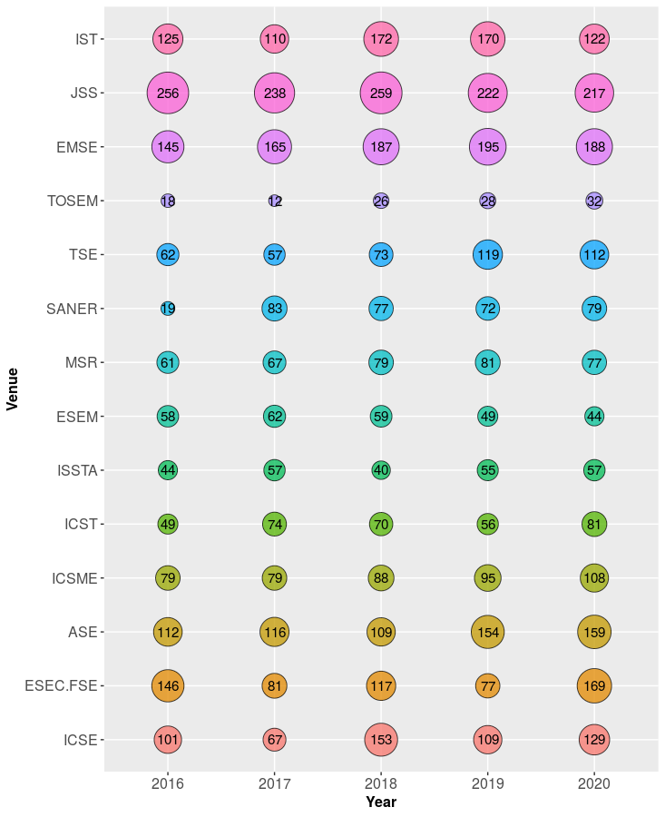

Abstract
Recommender systems in software engineering provide developers with a wide range of valuable items to help them complete their tasks. Among others, API recommender systems have gained momentum in recent years as they became more successful at suggesting API calls or code snippets. While these systems have proven to be effective in terms of prediction accuracy, there has been less attention for what concerns such recommenders' resilience against adversarial attempts. In fact, by crafting the recommenders' learning material, e.g., data from large open-source software (OSS) repositories, hostile users may succeed in injecting malicious data, putting at risk the software clients adopting API recommender systems. In this paper, we present an empirical investigation of adversarial machine learning techniques and their possible influence on recommender systems. The evaluation performed on three state-of-the-art API recommender systems reveals a worrying outcome: all of them are not immune to malicious data. The obtained result triggers the need for effective countermeasures to protect recommender systems against hostile attacks disguised in training data.Materials
We conducted a literature analysis on premier venues in Software Engineering, which are listed in following Table:

The following figures lists the number of articles we collected in the five most recent years, i.e., from 2016 to 2020 for all the considered conferences and journals (see Table above). In total, the final corpus consists of 7,076 documents.
